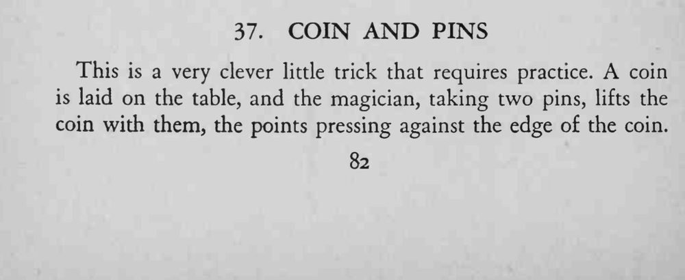
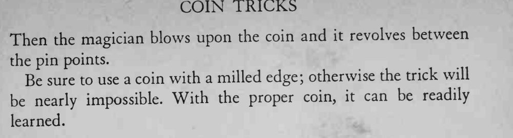

两根针的针尖顶住硬币边缘，竟能把硬币提起来；再对着硬币吹气，它就在两针之间旋转。
硬币一定要带滚花边缘，光滑的硬币夹不住，几乎无法完成。


This is a very clever little trick that requires practice. A coin is laid on the table, and the magician, taking two pins, lifts the coin with them, the points pressing against the edge of the coin. Then the magician blows upon the coin and it revolves between the pin points. Be sure to use a coin with a milled edge; otherwise the trick will be nearly impossible. With the proper coin, it can be readily learned.